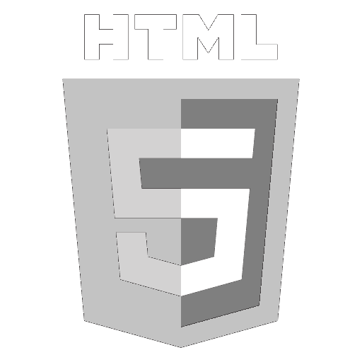

Osnovno značenje i istorija
XML (eXtensible Markup Language) je jezik za označavanje podataka koji služi za organizovanje i čuvanje informacija na strukturisan način.
Za razliku od običnog teksta, XML omogućava da se podaci lakše čitaju i obrađuju i od strane ljudi i od strane računara.
Ideja jezika za označavanje podataka je da se korisni sadržaj uokviri odgovarajućim oznakama.
Oznake bi trebale biti jednostavno čitljive i razumljive i čoveku koji ih gleda u bilo kojem programu za uređivanje teksta
a i računalni programi koji parsiraju taj sadržaj trebali bi moći na jednostavan način izvaditi određene podatke.
HTML
HTML je nastao kada je Tim Berners Lee izabrao jedan mali skup oznaka iz SGML skupa koji je korišten na CERNu i primjenio ih na formatiranje dokumenata.
HTML je imao mali skup oznaka koje su opisivale osnovne dijelove dokumenta. Programi koji su tumačili strukturu takvih dokumenata bili su HTML preglednici.
Ova web stranica, kao i mnoge druge, su potpuno ili djelomično označene HTML jezikom.